소방설비기사(기계분야) (2019-04-27 기출문제)
1과목: 소방원론
1. 건축물의 화재를 확산시키는 요인이라 볼 수 없는 것은?
- 비화(飛火)
- 복사열(輻射熱)
- 자연발화(自然發火)
- 접염(接炎)
(정답률: 64%)

2. 화재의 일반적 특성으로 틀린 것은?
- 확대성
- 정형성
- 우발성
- 불안정성
(정답률: 80%)
3. 다음 중 가연물의 제거를 통한 소화 방법과 무관한 것은?
- 산불의 확산방지를 위하여 산림의 일부를 벌채한다.
- 화학반응기의 화재 시 원료 공급관의 밸브를 잠근다.
- 전기실 화재 시 1G-54 약재를 방출한다.
- 유류탱크 화재 시 주변에 있는 유류탱크의 유류를 다른 곳으로 이동시킨다.
(정답률: 82%)
4. 물의 소화능력에 관한 설명 중 틀린 것은?
- 다른 물질보다 비열이 크다.
- 다른 물질보다 융해잠열이 작다.
- 다른 물질보다 증발잠열이 크다.
- 밀폐된 장소에서 증발가열되면 산소회석작용을 한다.
(정답률: 64%)
5. 탱크화재 시 발생되는 보일오버(Boil Over)의 방지방법으로 틀린 것은?
- 탱크 내용물의 기계적 교반
- 물의 배출
- 과열 방지
- 위험물 탱크내의 하부에 냉각수 저장
(정답률: 68%)
6. 물 소화약제를 어떠한 상태로 주수할 경우 전기화재의 진압에서도 소화능력을 발휘할 수 있는가?
- 물에 의한 봉상주수
- 물에 의한 적상주수
- 물에 의한 무상주수
- 어떤 상태의 주수에 의해서도 효과가 없다.
(정답률: 74%)
7. 화재 시 CO2를 방사하여 산소농도를 11[vol.%]로 낮추어 소화하려면 공기 중 CO2의 농도는 약 몇 [vol.%]가 증가 되어야 하는가?
- 47.6
- 42.9
- 37.9
- 34.5
(정답률: 65%)
8. 분말 소화약제의 취급 시 주의사항으로 틀린 것은?
- 습도가 높은 공기 중에 노출되면 고화되므로 항상 주의를 기울인다.
- 층진시 다른 소화약제와 혼합을 피하기 위하여 종별로 각각 다른 색으로 착색되어 있다.
- 실내에서 다량 방사하는 경우 분말을 흡입하지 않도록 한다.
- 분말 소화약제와 수성막포를 함께 사용할 경우 포의 소포 현상을 발생시키므로 병용해서는 안된다.
(정답률: 75%)
9. 화재실의 연기를 옥외로 배출시키는 제연방식으로 효과가 가장 적은 것은?
- 자연 제연방식
- 스모크 타워 제연방식
- 기계식 제연방식
- 냉난방설비를 이용한 제연방식
(정답률: 66%)
10. 다음 위험물 중 특수인화물이 아닌 것은?
- 아세톤
- 디에틸에테르
- 산화프로필렌
- 아세트알데히드
(정답률: 69%)
11. 목조건축물의 화재 진행상황에 관한 설명으로 옳은 것은?
- 화원-발연착화-무염착화-출화-최성기-소화
- 화원-발염착화-무염착화-소화-연소낙화
- 화원-무염착화-발염착화-출화-최성기-소화
- 화원-무염착화-출화-발염착화-최성기-소화
(정답률: 75%)
12. 방호공간 안에서 화재의 세기를 나타내고 화재가 진행되는 과정에서 온도에 따라 변하는 것으로 온도-시간 곡선으로 표시할 수 있는 것은?
- 화재저항
- 화재가혹도
- 화재하중
- 화재플럼
(정답률: 67%)
13. 다음 중 동일한 조건에서 증발잠열[kJ/kg]이 가장 큰 것은?
- 질소
- 할론 1301
- 이산화탄소
- 물
(정답률: 80%)
14. 화재 표면온도(절대온도)가 2배가 되면 복사에너지는 몇 배로 증가 되는가?
- 2
- 4
- 8
- 16
(정답률: 69%)
15. 연면적이 1,000[m2] 이상인 건축물에 설치하는 방화벽이 갖추어야 할 기준으로 틀린 것은?
- 내화구조로서 설 수 있는 구조일 것
- 방화벽의 양쪽 끝과 위쪽 끝을 건축물의 외벽면 및 지붕면으로부터 0.1[m] 이상 튀어나오게 할 것
- 방화벽에 설치하는 출입문의 너비는 2.5[m] 이하로 할 것
- 방화벽에 설치하는 출입문의 높이는 2.5[m] 이하로 할 것
(정답률: 77%)
16. 도장작업 공정에서의 위험도를 설명한 것으로 틀린 것은?
- 도장작업 그 자체 못지않게 건조공정도 위험하다.
- 도장작업에서는 인화성 용제가 쓰이지 않으므로 폭발의 위험이 없다.
- 도장작업장은 폭발사를 대비하여 지붕을 시공한다.
- 도장실은 환기덕트를 주기적으로 청소하여 도료가 덕트 내에 부착되지 않게 한다.
(정답률: 78%)
17. 공기의 부피 비율이 질소 79[%], 산소 21[%]인 전기실에 화재가 발생하여 이산화탄소 소화약제를 방출하여 소화하였다. 이 때 산소의 부피농도가 14[%]이었다면 이 혼합 공기의 분자량은 약 얼마인가? (단, 화재시 발생한 연소가스는 무시한다.)
- 28.9
- 30.9
- 33.9
- 35.9
(정답률: 44%)
18. 산불화재의 형태로 틀린 것은?
- 지중화 형태
- 수평화 형태
- 지표화 형태
- 수관화 형태
(정답률: 59%)
19. 석유, 고무, 동물의 털, 가죽 등과 같이 황성분을 함유하고 있는 물질이 불완전연소될 때 발생하는 연소가스로 계란 썩는 듯한 냄새가 나는 기체는?
- 아황산가스
- 시안화수소
- 황화수소
- 암모니아
(정답률: 64%)
20. 다음 가연성 기체 1몰이 완전 연소하는데 필요한 이론 공기량으로 틀린 것은? (단, 체적비로 계산하며 공기 중 산소의 농도를 21[vol.%]로 한다.)
- 수소-약 2.38몰
- 메탄-약 9.52몰
- 아세틸렌-약 16.97몰
- 프로판-약 23.81몰
(정답률: 48%)
2과목: 소방유체역학
21. 그림에서 물에 의하여 점 B에서 힌자된 사분원 모양의 수문이 평형을 유지하기 위하여 수면에서 수문을 잡아 당겨야 하는 힘 T는 약 몇 [kN]인가? (단, 수문의 폭 1[m], 반지름 (
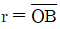
)은 2[m], 4분원의 중심은 O점에서 왼쪽으로 4r/3π인 곳에 있다.)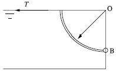
- 1.96
- 9.8
- 19.6
- 29.4
(정답률: 49%)
22. 물의 온도에 상응하는 증기압보다 낮은 부분이 발생하면 물은 증발되고 물 속에 있던 공기와 물이 분리되어 기포가 발생하는 펌프의 현상은?
- 피드백(Feed Back)
- 서징현상(Surging)
- 공동현상(Cavitation)
- 수격작용(Water Hammering)
(정답률: 69%)
23. 단면적이 A와 2A인 U자형 관에 밀도가 d인 기름이 담겨져 있다. 단면적이 2A인 관에 관벽과는 마찰이 없는 물체를 놓았더니 그림과 같이 평형을 이루었다. 이 때 이 물체의 질량은?
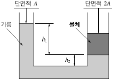
- 2Ah1d
- Ah1d
- A(h1+h2)d
- A(h1-h2)d
(정답률: 45%)
24. 그림과 같이 물이 들어있는 아주 큰 탱크에 사이펀이 장치되어 있다. 출구에서의 속도 V와 관의 상부 중심 A지점에서의 게이지 압력 pA를 구하는 식은? (단. g는 중력가속도, ρ는 물의 밀도이며, 관의 직경은 일정하고 모든 손실은 무시한다.)
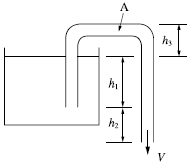
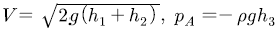
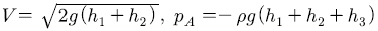
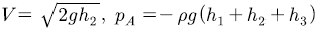
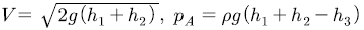
(정답률: 55%)
25. 0.02[m3]의 체적을 갖는 액체가 강체의 실린더 속에서 730[kPa]의 압력을 받고 있다. 압력이 1,030[kPa]로 증가되었을 때 액체의 체적이 0.019[m3]으로 축소되었다. 이 때 이 액체의 체적탄성계수는 약 몇 [kPa]인가?
- 3,000
- 4,000
- 5,000
- 6,000
(정답률: 44%)
26. 비중병의 무게가 비었을 때는 2[N]이고, 액체로 충만되어 있을 때는 8[N]이다. 액체의 체적이 0.5[L]이면 이 액체의 비중량은 약 몇 [N/m3]인가?
- 11,000
- 11,500
- 12,000
- 12,500
(정답률: 58%)
27. 10[kg]의 수증기가 들어 있는 체적 2[m3]의 단단한 용기를 냉각하여 온도를 200[℃]에서 150[℃]로 낮추었다. 나중 상태에서 액체상태의 물은 약 몇 [kg]인가? (단, 150[℃]에서 물의 포화액 및 포화증기의 비체적은 각각 0.0011[m3/kg], 0.3925[m3/kg]이다.)
- 0.508
- 1.24
- 4.92
- 7.86
(정답률: 31%)
28. 펌프의 입구 및 출구측에 연결된 진공계와 압력계가 각각 25[mmHg]와 260[kPa]을 가리켰다. 이 펌프의 배출 유량이 0.15[m3/s]가 되려면 펌프의 동력은 약 몇 [kW]가 되어야 하는가? (단, 펌프의 입구와 출구의 높이차는 없고, 입구측 안지름은 20[cm], 출구측 안지름은 15[cm]이다.)
- 3.95
- 4.32
- 39.5
- 43.2
(정답률: 31%)
29. 피토관을 사용하여 일정 속도로 흐르고 있는 물의 유속(V)을 측정하기 위해, 그림과 같이 비중 S인 유체를 갖는 액주계를 설치하였다. S=2일 때 액주의 높이차이가 H=h가 되면, S=3일 때 액주의 높이 차(H)는 얼마가 되는가?
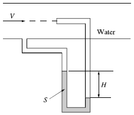
- h/9
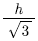
- h/3
- h/2
(정답률: 38%)
30. 관내의 흐름에서 부차적으로 손실에 해당하지 않는 것은?
- 곡선부에 의한 손실
- 직선 원관 내의 손실
- 유동단면의 장애물에 의한 손실
- 관 단면의 급격한 확대에 의한 손실
(정답률: 67%)
31. 압력 2[MPa]인 수증기 건도가 0.2일 때 엔탈피는 몇 [kJ/kg]인가? (단, 포화증기 엔탈피는 2,780.5[kJ/kg]이고, 포화액의 엔탈피는 910[kJ/kg]이다.)
- 1,284
- 1,466
- 1,845
- 2.406
(정답률: 27%)
32. 출구 단면적이 0.02[m2]인 수평 노즐을 통하여 물이 수평 방향으로 8[m/s]의 속도로 노즐 출구에 놓여있는 수직 평판에 분사될 때 평판에 작용하는 힘은 약 몇 [N]인가?
- 800
- 1,280
- 2,560
- 12,544
(정답률: 47%)
33. 안지름이 25[mm]인 노즐 선단에서의 방수 압력은 계기 압력으로 5.8×105[Pa]이다. 이 때 방수량은 약 [m3/s]인가?
- 0.017
- 0.17
- 0.034
- 0.34
(정답률: 41%)
34. 수평관의 길이가 100[m]이고, 안지름이 100[mm]인 소화설비 배관 내를 평균유속 2[m/s]로 물이 흐를 때 마찰손실수두는 약 몇 [m]인가? (단, 관의 마찰계수는 0.⑤이다.)
- 9.2
- 10.2
- 11.2
- 12.2
(정답률: 58%)
35. 수평 원관 내 완전발달 유동에서 유동을 일으키는 힘(ㄱ)과 방해하는 힘(ㄴ)은 각각 무엇인가?
- ㄱ:압력차에 의한 힘, ㄴ:점성력
- ㄱ:중력 힘, ㄴ:점성력
- ㄱ:중력 힘, ㄴ:압력차에 의한 힘
- ㄱ:압력차에 의한 힘, ㄴ:중력 힘
(정답률: 63%)
36. 외부표면의 온도가 24[℃], 내부표면의 온도가 24.5[℃]일 때, 높이 1.5[m], 폭 1.5[m], 두께 0.5[cm]인 유리창을 총한 열전달률은 약 몇 [W]인가? (단, 유리창의 열전도계수는 0.8[w/mㆍK]이다.
- 180
- 200
- 1,800
- 2,000
(정답률: 48%)
37. 어떤 용기 내의 이산화탄소(45[kg])가 방호공간에 가스 상태로 방출되고 있다. 방출 온도가 압력이 15[℃], 101[kPa]일 때 방출가스의 체적은 약 몇 [m3]인가? (단, 일반 기체상수는 8,314[J/kmolㆍK]이다.)
- 2.2
- 12.2
- 20.2
- 24.3
(정답률: 41%)
38. 점성계수와 동점성계수에 관한 설명으로 올바른 것은?
- 동점성계수=점성계수×밀도
- 점성계수=동점성계수×중력가속도
- 동점성계수=점성계수/밀도
- 점성계수=동점성계수/중력가속도
(정답률: 63%)
39. 그림과 같은 관에 비압축성 유체가 흐를 때 A 단면의 평균속도가 V1이라면 B단면에서의 평균속도 V2는? (단, A 단면의 지름은 d1이고 B단면의 지름은 d2이다.)
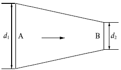
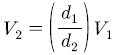
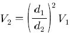
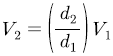
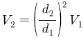
(정답률: 53%)
40. 일률(시간당 에너지)의 차원을 기본 차원인 M(질량), L(길이), T(시간)로 올바르게 표시한 것은?
- L2T-2
- MT-2L-1
- ML2T-2
- ML2T-3
(정답률: 53%)
3과목: 소방관계법규
41. 소방시설을 구분하는 경우 소화설비에 해당되지 않는 것은?
- 스프링클러설비
- 제연설비
- 자동확산소화기
- 옥외소화전설비
(정답률: 64%)
42. 소방특별조사 결과 소방대상물의 위치ㆍ구조ㆍ설비 또는 관리의 상황이 화재나 재난ㆍ재해 예방을 위하여 보완될 필요가 있거나 화재가 발생하면 인명 또는 재산의 피해가 클 것으로 예상되는 때에 관계인에게 그 소방대상물의 개수ㆍ이전ㆍ제거, 사용의 금지 또는 제한, 사용폐쇄, 공사의 정지 또는 중지, 그 밖의 필요한 조치를 명할 수 있는 자로 틀린 것은?
- 시ㆍ도지사
- 소방서장
- 소방청장
- 소방본부장
(정답률: 67%)
43. 화재예방, 소방시설 설치ㆍ유지 및 안전관리에 관한 법령상 둘 이상의 특정소방대상물이 내화구조로 된 연결통로가 벽이 없는 구조로서 그 길이가 몇 [m] 이하인 경우 하나의 소방대상물로 보는가?
- 6
- 9
- 10
- 12
(정답률: 42%)
44. 소방대라 함은 화재를 진압하고 화재, 재난ㆍ재해 그 밖의 위급한 상황에서 구조ㆍ구급 활동 등을 하기 위하여 구성된 조직체를 말한다. 소방대의 구성원으로 틀린 것은?
- 소방공무원
- 소방안전관리원
- 의무소방원
- 의용소방대원
(정답률: 66%)
45. 소방시설관리업자가 기술인력을 변경하는 경우, 시ㆍ도지사에게 제출하여야 하는 서류로 틀린 것은?
- 소방시설관리업 등록수첩
- 변경된 기술인력의 기술자격증(자격수첩)
- 기술인력 연명부
- 사업자등록증 사본
(정답률: 60%)
46. 제4류 위험물을 저장ㆍ취급하는 제조소에 “화기엄금”이란 주의사항을 표시하는 게시판을 설치할 경우 게시판의 색상은?
- 청색바탕에 백색문자
- 적색바탕에 백색문자
- 백색바탕에 적색문자
- 백색바탕에 흑색문자
(정답률: 58%)
47. 다음 중 품질이 우수하다고 인정되는 소방용품에 대하여 우수품질인증을 할 수 있는 자는?
- 산업통상자원부장관
- 시ㆍ도지사
- 소방청장
- 소방본부장 또는 소방서장
(정답률: 56%)
48. 다음 중 고급기술자에 해당하는 학력ㆍ경력 기준으로 옳은 것은?(오류 신고가 접수된 문제입니다. 반드시 정답과 해설을 확인하시기 바랍니다.)
- 박사학위를 취득한 후 2년 이상 소방 관련 업무를 수행한 사람
- 석사학위를 취득한 후 6년 이상 소방 관련 업무를 수행한 사람
- 학사학위를 취득한 후 8년 이상 소방 관련 업무를 수행한 사람
- 고등학교를 졸업 후 10년 이상 소방 관련 업무를 수행한 사람
(정답률: 57%)
49. 소방기본법령상 인접하고 있는 시ㆍ도간 소방업무의 상호응원협정을 체결하고자 할 때, 포함되어야 하는 사항으로 틀린 것은?
- 소방교육ㆍ훈련의 종류에 관한 사항
- 화재의 경계ㆍ진압활동에 관한 사항
- 출동대원의 수당ㆍ식사 및 피복의 수선의 소요경비의 부담에 관한 사항
- 화재조사활동에 관한 사항
(정답률: 52%)
50. 소방기본법령상 위험물 또는 물건의 보관기간은 소방 본부 또는 소방서의 게시판에 공고하는 기간의 종료일 다음 날부터 며칠로 하는가?
- 3일
- 5일
- 7일
- 14일
(정답률: 60%)
51. 지정수량의 최소 몇 배 이상의 위험물을 취급하는 제조소에는 피뢰침을 설치해야 하는가? (단, 제6류 위험물을 취급하는 위험물제조소는 제외하고, 제조소 주위의 상황에 따라 안전상 지장이 없는 경우도 제외한다.)
- 5배
- 10배
- 50배
- 100배
(정답률: 70%)
52. 산화성고체인 제1류 위험물에 해당되는 것은?
- 질산염류
- 특수인화물
- 과염소산
- 유기과산화물
(정답률: 63%)
53. 위험물안전관리법상 청문을 실시하여 처분해야 하는 것은?
- 제조소등 설치허가의 취소
- 제조소등 영업정지 처분
- 탱크시험자의 영업정지 처분
- 과징금 부과 처분
(정답률: 65%)
54. 화재예방 소방시설 설치ㆍ유지 및 안전관리에 관한 법령상 특정소방대상물 중 오피스텔은 어느 시설에 해당하는가?
- 숙박시설
- 일반업무시설
- 공동주택
- 근린생활시설
(정답률: 72%)
55. 화재예방, 수방시설 설치ㆍ유지 및 안전관리에 관한 법령상, 종사자 수가 5명이고, 숙박시설이 모두 2인용 침대이며 침대수량은 50개인 청소년 시설에서 수용인원은 몇 명인가?
- 55
- 75
- 85
- 1⑤
(정답률: 74%)
56. 다음 중 300만원 이하의 벌금에 해당되지 않는 것은? (문제 오류로 가답안 발표시 2번으로 발표되었지만 확정답안 발표시 1, 2번이 정답처리 되었습니다. 여기서는 1번을 누르면 정답 처리 됩니다.)
- 등록수첩을 다른 자에게 빌려준 자
- 소방시설공사의 완공검사를 받지 아니한 자
- 소방기술자가 동시에 둘 이상의 업체에 취업한 사람
- 소방시설공사 현장에 감리원을 배치하지 아니한 자
(정답률: 57%)
57. 화재예방, 소방시설 설치ㆍ유지 및 안전관리에 관한 법령상 건축허가등의 동의를 요구한 기관이 그 건축허가 등을 취소하였을 때, 최소한 날로부터 최대 며칠 이내에 건축물 등의 시공지 또는 소재지를 관할하는 소방본부장 또는 소방서장에게 그 사실을 통보하여야 하는가?
- 3일
- 4일
- 7일
- 10일
(정답률: 46%)
58. 소방기본법상 화재 현장에서의 피난 등을 체험할 수 있는 소방체험관의 설립ㆍ운영권자는?
- 시ㆍ도지사
- 행정안전부장관
- 소방본부장 또는 소방서장
- 소방청장
(정답률: 65%)
59. 소방기본법령상 소방활동구역의 출입자에 해당되지 않는 자는?
- 소방활동구역 안에 있는 소방대상물의 소유자ㆍ관리자 또는 점유자
- 전기ㆍ가스ㆍ수도ㆍ통신ㆍ교통의 업무에 종사하는 사람으로서 원활한 소방활동을 위하여 필요한 자
- 화재건물과 관련 있는 부동산업자
- 취재인력 등 보도업무에 종사하는 자
(정답률: 71%)
60. 소방본부장 또는 소방서장은 건축허가 등의 동의요구 서류를 접수한 날부터 최대 며칠 이내에 건축허가 등의 동의여부를 회신하여야 하는가? (단, 허가 신청한 건축물은 지상으로부터 높이가 200[m]인 아파트이다.)
- 5일
- 7일
- 10일
- 15일
(정답률: 55%)
4과목: 소방기계시설의 구조 및 원리
61. 작동전압이 22,900[V]의 고압의 전기기기가 있는 장소에 물분무설비를 설치할 때 전기기기와 물 분무 헤드 사이의 최소 이격 거리는 얼마로 해야 하는가?
- 70[cm] 이상
- 80[cm] 이상
- 110[cm] 이상
- 150[cm] 이상
(정답률: 58%)
62. 다음 중 일반화재(A급 화재)에 적응성을 만족하지 못한 소화약제는? (문제 오류로 가답안 발표시 4번으로 발표되었지만 확정답안 발표시 모두 정답처리 되었습니다. 여기서는 1번을 누르면 정답 처리 됩니다.)
- 포 소화약제
- 강화액 소화약제
- 할론 소화약제
- 이산화탄소 소화약제
(정답률: 62%)
63. 거실 제연설비 설계 중 배출량 선정에 있어서 고려하지 않아도 되는 사항은?
- 예상제연구역의 수직거리
- 예상제연구역의 바닥면적
- 제연설비의 배출방식
- 자동식 소화설비 및 피난설비의 설치 유무
(정답률: 61%)
64. 폐쇄형 스프링클러 헤드를 최고 주위온도 40[℃]인 장소(공장 및 창고 제외)에 설치할 경우 표시온도는 몇 [℃]의 것을 설치하여야 하는가?
- 79[℃] 미만
- 79[℃] 이상 121[℃] 미만
- 121[℃] 이상 162[℃] 미만
- 162[℃] 이상
(정답률: 62%)
65. 스프링클러헤드를 설치하지 않을 수 있는 장소로만 나열된 것은?
- 계단, 병실, 목욕실, 냉동창고의 냉동실, 아파트(대피공간 제외)
- 발전실, 수술실, 응급처치실, 통신기기실, 관람석이 없는 테니스장
- 냉동창고의 냉동실, 변전실, 병실, 목욕실, 수영장 관람석
- 수술실, 관람석이 없는 테니스장, 변전실, 발전실, 아파트(대피공간 제외)
(정답률: 68%)
66. 학교, 공장, 창고시설에 설치하는 옥내소화전에서 가압송수장치 및 기동장치가 동결의 우려가 있는 경우 일부 사항을 제외하고는 주펌프와 동등 이상의 성능이 있는 별도의 펌프로서 내연기관의 기동과연동하여 작동되거나 비상전원을 연결한 펌프를 추가 설치해야 한다. 다음 중 이러한 조치를취해야 하는 경우는?
- 지하층이 없이 지상층만 있는 건축물
- 고가수조를 가압송수장치로 설치한 경우다.
- 수원이 건축물의 최상층에 설치된 방수구보다 높은 위치에 설치되 경우
- 건축물의 높이가 지표면으로부터 10[m] 이하인 경우
(정답률: 40%)
67. 다음은 할로겐화합 소화설비의 수동 기동장치 점검 내용으로 맞지 않은 것은?
- 방호구역마다 설치되어 있는지 점검한다.
- 방출지연용 비상스위치가 설치되어 있는지 점검한다.
- 화재감지기와 연동되어있는지 점검한다.
- 조작부는 바닥으로부터 0.8[m] 이상 1.5[m] 이하의 위치에 설치되어 있는지 점검한다.
(정답률: 48%)
68. 화재 시 연기가 찰 우려가 없는 장소로서 호스릴분말소화설비를 설치할 수 있는 기준 중 다음 ()안에 알맞은 것은?
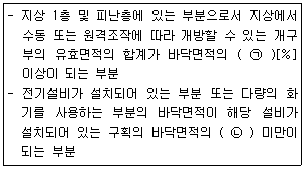
- ㉠ 15, ㉡ 1/5
- ㉠ 15, ㉡ 1/2
- ㉠ 20, ㉡ 1/5
- ㉠ 20, ㉡ 1/2
(정답률: 49%)
69. 다음 ()안에 들어가는 기기로 옳은 것은?
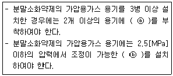
- ⓐ 전자개방밸브, ⓑ 압력조정기
- ⓐ 전자개방밸브, ⓑ 정압작동장치
- ⓐ 압력조정기, ⓑ 전자개방밸브
- ⓐ 압력조장기, ⓑ 정압개방밸브
(정답률: 64%)
70. 이산화탄소 소화약제의 저장용기에 관한 일반적인 설명으로 옳지 않은 것은?
- 방호구역내의 장소에 설치하되 피난구 부근을 피하여 설치할 것
- 온도가 40[℃] 이하이고, 온도변화가 적은 곳에 설치할 것
- 직사광선 및 빗물이 침투할 우려가 없는 곳에 설치할 것
- 용기간의 간격은 점검에 지장이 없도록 3[cm] 이상의 간격을 유지할 것
(정답률: 59%)
71. 다음 중 피난사다리 하부 지지점에 미끄럼 방지장치를 설치하여야 하는 것은?
- 내림식 사다리
- 올림식 사다리
- 수납식 사다리
- 신축식 사다리
(정답률: 50%)
72. 포소화약제의 혼합장치 중 펌프의 토출관에 압입기를 설치하여 포 소화약제 압입용 펌프로 소화약제를 압입시켜 혼합하는 방식은?
- 펌프 프로포셔너 방식
- 프레져사이드 프로포셔너 방식
- 라인 프로포셔너 방식
- 프레져 프로포셔너 방식
(정답률: 70%)
73. 제연설비에서 예상제연구역의 각 부분으로부터 하나의 배출구까지의 수평거리를 몇 [m] 이내가 되도록 하여야 하는가?
- 10[m]
- 12[m]
- 15[m]
- 20[m]
(정답률: 54%)
74. 상수도 소화용수 설비의 소화전은 특정 소방대상물의 수평투영면 각 부분으로부터 최대 몇 [m] 이하가 되도록 설치하는가?
- 25[m]
- 40[m]
- 100[m]
- 140[m]
(정답률: 64%)
75. 물분무소화설비 가압송수장치의 토출량에 대한 최소기준으로 옳은 것은? (단, 특수가연물을 저장 취급하는 특정 소방대상물 및 차고 주차장의 바닥면적은 50[m2]이하인 경우는 50[m2]를 기준으로 한다.)
- 차고 또는 주차장의 바닥면적 1[m2]에 대해 10[L/min]로 20분간 방수할 수 있는 양 이상
- 특수가연물을 저장ㆍ취급하는 특정 소방대상물의 바닥면적 1[m2]에 대해 20[L/min]로 20분간 방수할 수 있는 양 이상
- 케이블 트레이, 케이블 덕트는 투영된 바닥면적 1[m2]에 대해 10[L/mim]로 20분간 방수할 수 있는 양 이상
- 절연유 봉입 변압기는 바닥면적을 제외한 표면적을 합한 면적1[m2]에 대해 10[L/min]로 20분간 방수할 수 있는 양 이상
(정답률: 57%)
76. 피난기구 설치 기준으로 옳지 않은 것은?
- 피난기구는 소방대상물의 기둥ㆍ바닥ㆍ보, 기타 구조상 견고한 부분에 볼트조임ㆍ매입ㆍ용접, 기타의 방법으로 견고하게 부착할 것
- 2층 이상의 층에 피난사다리(하향식 피난구용 내림식사다리는 제외한다.)를 설치하는 경우에는 금속성 고정사다리를 설치하고, 피난에 방해되지 않도록 노대는 설치되지 않아야 할 것
- 승강식피난기 및 하향식 피난구용 내림식사다리는 설치경로가 설치층에서 피난층까지 연계될 수 있는 구조로 설치할 것. 다만, 건축물의 구조 및 설치 여건 상 불가피한 경우에는 그러하지 아니한다.
- 승강식피난기 및 하향식 피난구용 내림식사다리의 하강식 내측에는 기구의 연결 금속구 등이 없어야 하며 전개된 피난기구는 하강수 수평투영면적 공간 내의 범위를 침범하지 않는 구조이어야 할 것. 단, 직경 60[cm] 크기의 범위를 벗어난 경우이거나, 직하층의 바닥 면으로부터 높이 50[cm] 이하의 범위는 제외한다.
(정답률: 50%)
77. 포소화설비의 자동식 기동장치를 패쇄형 스프링클러헤드의 개방과 연동하여 가압송수장치ㆍ일제개방밸브 및 포 소화약제 혼합 장치를 기동하는 경우 다음 ()안에 알맞은 것은? (단, 자동화재탐지설비의 수신기가 설치된 장소에 장시 사람이 근무하고 있고, 화재시 즉시 해당 조작부를 작동시킬 수 있는 경우는 제외한다.)
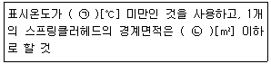
- ㉠ 79, ㉡ 8
- ㉠ 121, ㉡ 8
- ㉠ 79, ㉡ 20
- ㉠ 121, ㉡ 20
(정답률: 60%)
78. 특정소방대상물별 소화기구의 능력단위의 기준 중 다음 ()안에 알맞은 것은?
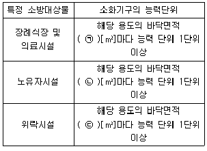
- ㉠ 30, ㉡ 50 ㉢ 100
- ㉠ 30, ㉡ 100 ㉢ 50
- ㉠ 50, ㉡ 100 ㉢ 30
- ㉠ 50, ㉡ 30 ㉢ 100
(정답률: 54%)
79. 아래 평면도와 같이 반자가 있는 어느 실내에 전등이나 공조용 디퓨져 등의 시설물을 무시하고 수평거리를 2.1[m]로 하여 스프링클러헤드를 정방형으로 설치하고자 할 때 최소 몇 개의 헤드를 설치해야 하는가? (단, 반자 속에는 헤드를 설치하지 아니하는 것으로 본다.)
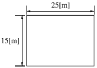
- 24개
- 42개
- 54개
- 72개
(정답률: 53%)
80. 소화용수설비 중 소화수조 및 저수조에 대한 설명으로 틀린 것은?
- 소화수조, 저수조의 채수구 또는 흡수관투입구는 소방차가 2[m] 이내의 지점까지 접근할 수 있는 위치에 설치할 것
- 지하에 설치하는 소화용수설비의 흡수관투입구는 그 한 변이 0.6[m] 이상인 것으로 할 것
- 채수구는 지면으로부터의 높이가 0.5[m] 이상 1[m] 이하의 위치에 설치하고 “채수구”라고 표시한 표시를 할 것
- 소화수조가 옥상 또는 옥탑의 부분에 설치된 경우에는 지상에 설치된 채수구에서의 압력이 0.1[MPa]이상이 되도록 할 것
(정답률: 60%)